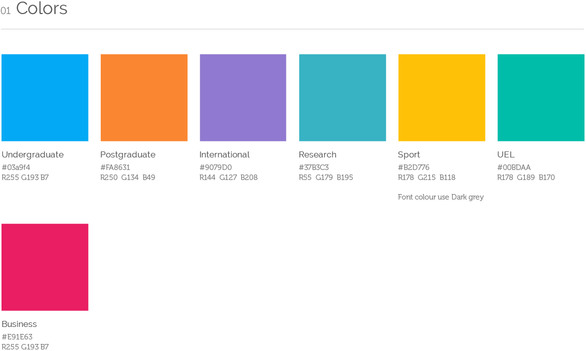
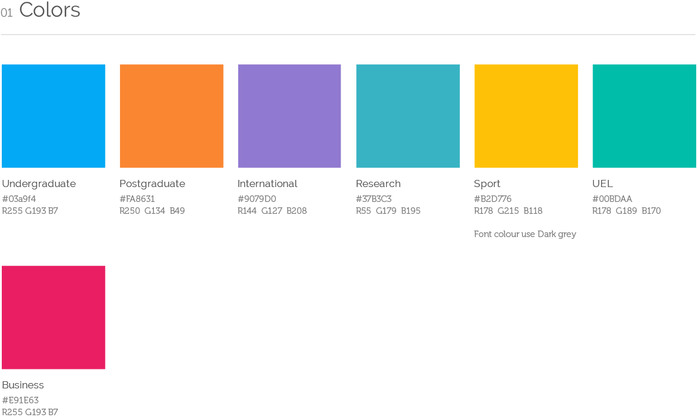
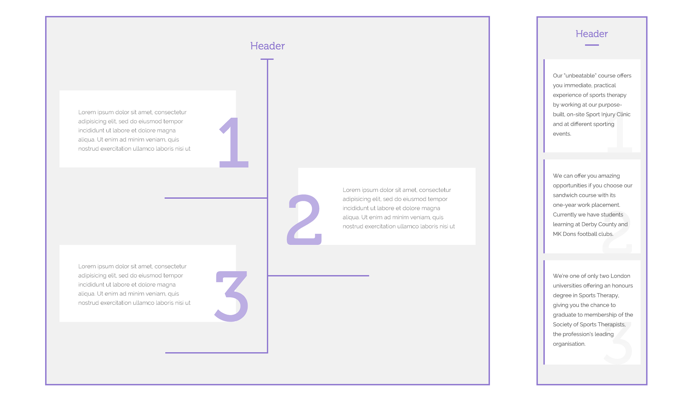
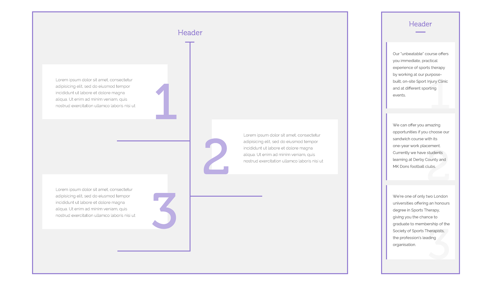
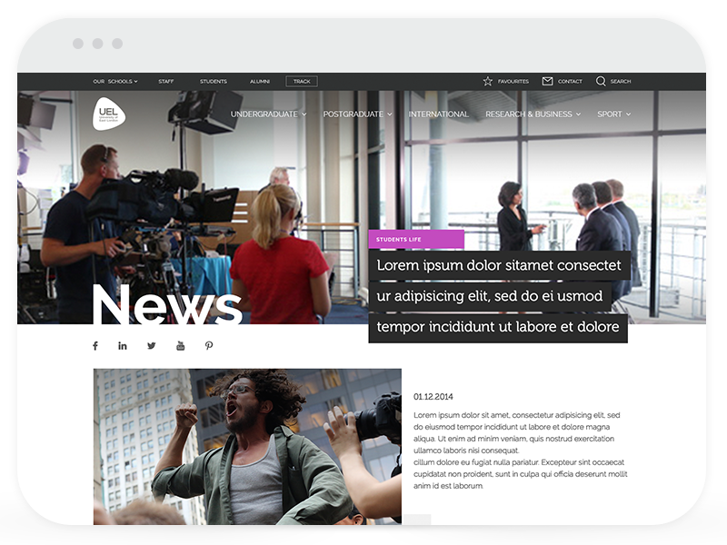
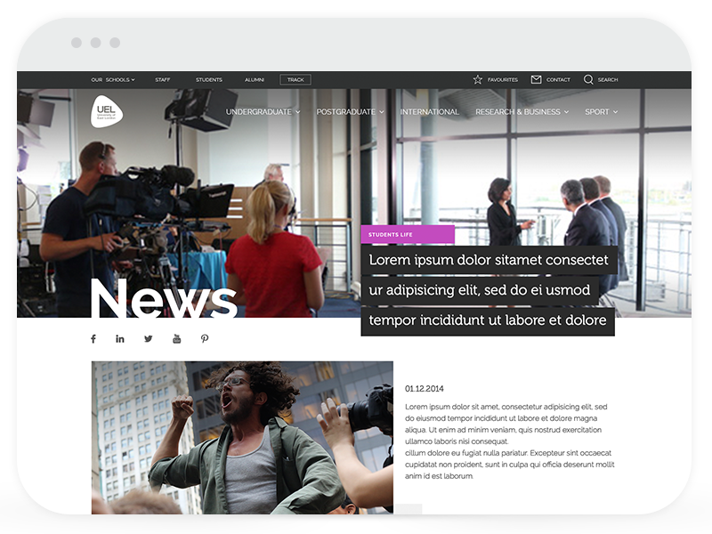
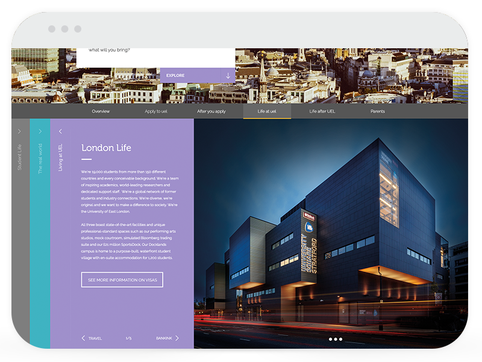
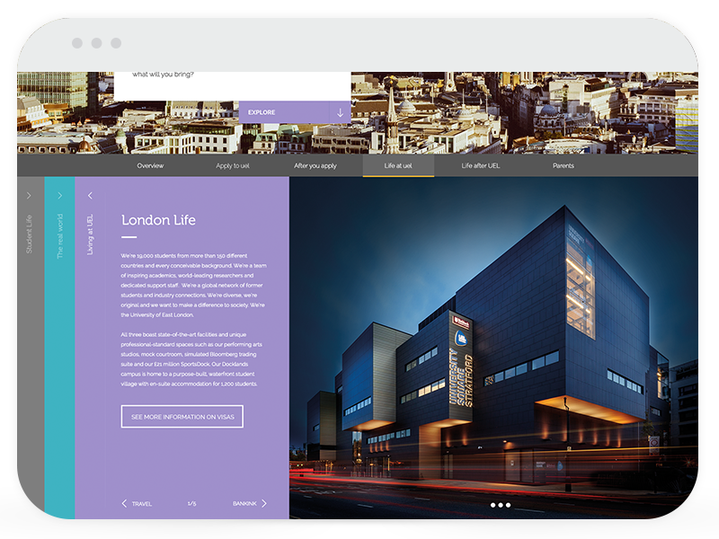
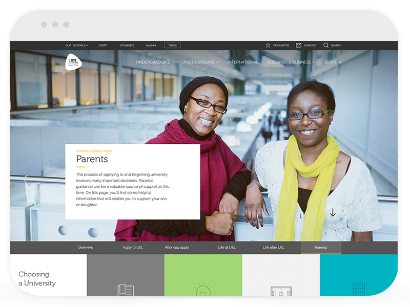
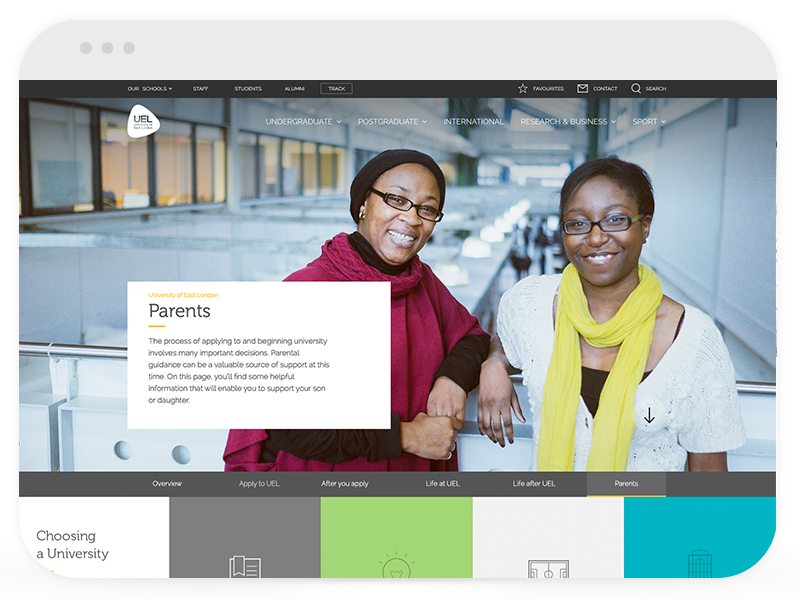

The University of East London (UEL) wanted an entire rethink of how they would persuade prospective students to join their university and thereby safeguard their main revenue stream. We would ultimately create a responsive, well-organised website that would effectively communicate their story.
Aware of forthcoming changes to rules governing how universities accept students, UEL sought to revitalise its digital strategy. Its main revenue stream relied on their ability to “recruit” students each academic year and this dynamic was potentially about to be disrupted.
How can we create a better website for prospective students that will look good on every device and increase enrollment
Universities would soon be able to set the amount that they charged for tuition on top of being able to accept as many students per year as they could. Improving the way in which they were received by new students was crucial to staying on top of the shifting landscape but outdated content and a confusing user journey were holding them back.
Before
After
The team
For the first time UEL implemented a team structure based around Agile principles and moving to this new model would mean significant changes in its organisation and culture. Our team—developers, testers, designers, copywriters—were all in one project room and based on campus. This proved to work really well because not only did we have easier communication with the client and within our team but we could work and interact with the students on a daily basis. It made getting user’s feedback straightforward and saved us from many potential design mistakes. We were able to validate our design choices early avoiding a costlier change at a later stage.
My role
Most of my time was spent working in a two-person design team that was responsible for gathering the requirements, conducting workshops, translating user needs into wireframes, user testing, creating a new visual language, designing new user interface (UI) components and working closely with the development team to assist UI implementation efforts.

Challenges
Time
We were given only eight months to redesign the site. Due to the amount of content on their old website we would end up approaching our redesign in stages whilst also developing in parallel. We were aware a good redesign would take time. Through careful prioritisation we allowed ourselves to work on the trickiest sections for longer periods whilst supervising the implementation.
Dynamic content
Designing a user experience for a website that will have content edited by non-technical staff members is definitely more difficult than developing a site where you have control over every single word. During my work I always needed to keep in mind Sitecore restrictions and do my best to predict user behaviours.
Many clients
The University of East London is a big institution with complex organisation structure which meant we managed many stakeholders with different backgrounds, motives and goals. It was very important to find a balance between their requests and what was the best for the product.
Design Process
Research
We started with a research phase to understand UEL’s strengths, weaknesses, opportunities and threats. After conducting workshops with key figures we were able to define the target audience were:
- Students two years before applying to university
- Prospective students looking for a course during clearing
- International students
We knew that creating the one type of content for all of them was impossible. After changing the content management system (CMS) to Sitecore we would be able to create pages tailored for each of the above groups. Depending on who the visitor was and where they were from the system would display appropriate content.
After using research methods like focus groups, field studies, interviews and clickstream analysis we were finally ready to explore the main user scenarios. At this point we switched to rapid wire framing and testing the user flows in order to define a key structure and interaction patterns.
Information architecture
At the beginning we needed to redesign the site’s architecture and content map to make the information easily accessible with very few clicks. Every category at UEL website had at least two level structure so in order to help navigate through it we assigned a unique color to each section to highlight the users localisation.
 
Navigation
Following on we needed navigation that was intuitive and effective whilst also balancing a key requirement to promote all of courses that UEL was offering. We decided to use a full screen navigation pattern for the desktop and I think this turned out to be one of the most controversial design decisions for our team. Some doubted if it would be user-friendly enough so we came up with a second idea where the navigation would have a slightly deeper structure.
We put our two designs through A/B testing only to discover those fears had merit–students responded to the second solution much better.
Mobile navigation
Funnily enough the opposite thing happened when we turned our attention to the mobile menu. We produced two menus: one where you touched category names to reveal deeper links and the other which worked more similarly to an accordion paradigm. Within the team the former menu seemed to be the most intuitive but in A/B testing the accordion won out.
Components library
As the structure of the website became clearer we began getting sample copy which we used to mock up whole pages. After we had produced several of these whole page mockups we started to recognise common patterns which were ideal to generalise.
Our goal then became to build a library of reusable components that would be easy to create as many types of future pages as possible. Through conversations with our developers I started to understand how the editing experience worked in Sitecore. I realised that presenting the content was only one side of the story. Creating a pleasant user experience for the content editors was also a key priority.
Once recognised we got to work creating the various designs for a responsive component. As Sitecore had a very visual editing experience that mimicked the way the website would be displayed we also put thought into how the component could be presented in editing-mode. We stressed our editable areas to check that their layout in certain situations was predictable or we sought to restrict them in someway when we could not. For instance, we might limit the size of a heading if the layout could be compromised from its length.


 
With that approach, creating new pages was more like playing with Lego—all components were consistent so it was possible to use them in any order and configuration.
It was crucial to educate the content editors on how best to use a component based on the content they wanted to present so that we would avoid a situation where people that do not know or care about aesthetic need to make a design decision.
User Interface
Though collaboration with the team responsible for the new brand, I created UEL’s visual language for their digital services and their responsive user interface. The other team’s main priority was for print so we reconciled many design choices with their digital counterparts and vice versa. For instance, we had some colours on the website that would not print well so in these cases we adjusted them until they did.
 
 
 
